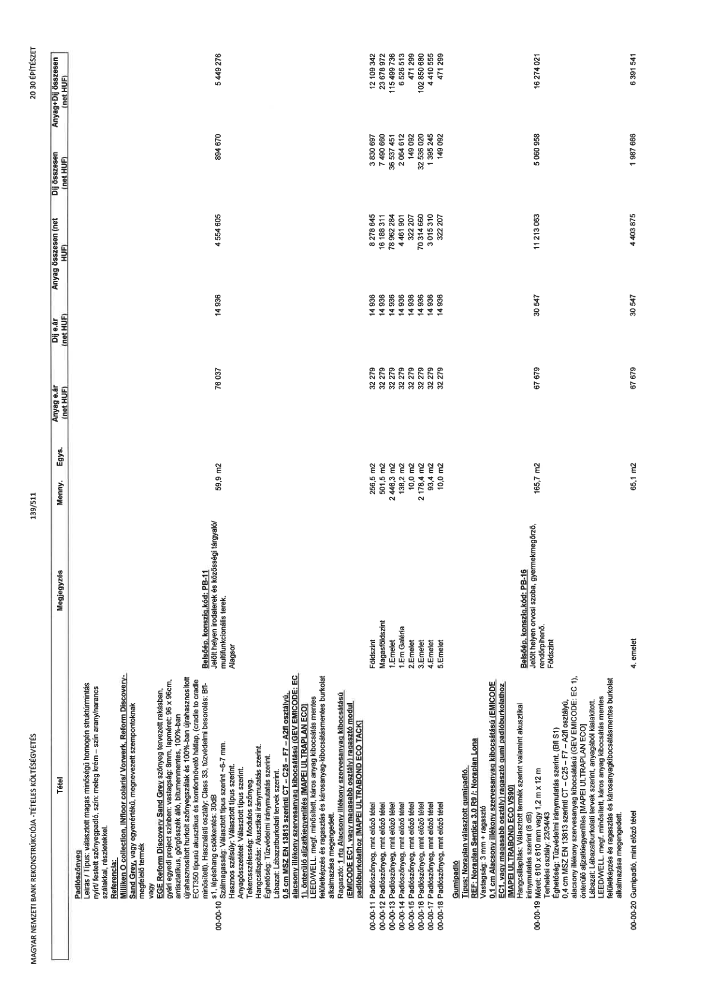

| Tétel | Megjegyzés | Menny. | Egys. | Anyag e.ár (net HUF) | Díj e.ár (net HUF) | Anyag összesen (net HUF) | Díj összesen (net HUF) | Anyag+Díj összesen (net HUF) |
|---|---|---|---|---|---|---|---|---|
| Padlószőnyeg | NaN | NaN | NaN | 0 | 0 | 0 | 0 | 0 |
| 00-00-10 Padlószőnyeg; Leírás / Típus: választott magas minőségű homogén struktúrmintás nyírt/ festett szőnyegpadló, szín: meleg krém - szín arany/narancs szálakkal, részletekkel. Referencia: Milliken O collection, Infloor coloris/ Vorwerk, Reform Discovery, Sand Grey, vagy egyenértékű, megnevezett szempontoknak megfelelő termék vagy EGE Reform Discovery Sand Grey szőnyeg tervezett rakásban, gyári egyedi project színben; vastagság: 8mm, lapméret: 96 x 96cm, antisztatikus, görgősszék álló, bitumenmentes, 100%-ban újrahasznosított hurkolt szőnyegszálak és 100%-ban újrahasznosított ECT350 típusú akusztikus és komfortnövelő hátlap, (cradle to cradle minősített), Használati osztály: Class 33, tűzvédelmi besorolás: Bfl-s1, lépéshang csökkentés: 30dB Szálmagasság: Választott típus szerint ~6-7 mm, Hasznos szálsúly: Választott típus szerint, Anyagösszetétel: Választott típus szerint, Tekercsszélesség: Modulos szőnyeg, Hangcsillapítás: Akusztikai iránymutatás szerint, Éghetőség: Tűzvédelmi iránymutatás szerint, Lábazat: Lábazatburkolati tervek szerint, 0,5 cm MSZ EN 13813 szerinti CT - C25 - F7 - A2fl osztályú, alacsony illékony szervesanyag kibocsátású (GEV EMICODE: EC 1), önterülő aljzatkiegyenlítés [MAPEI ULTRAPLAN ECO] LEED/WELL, megf. minősített, káros anyag kibocsátás mentes felületképzés és ragasztás és károsanyag-kibocsátásmentes burkolat alkalmazása megengedett, Ragasztó: 1 rtg Alacsony illékony szervesanyag kibocsátású (EMICODE EC1, vagy magasabb osztály) ragasztó modul padlóburkolathoz [MAPEI ULTRABOND ECO TACK] | Belsőép. konszig. kód: PB-11 Jelölt helyen irodaterek és közösségi tárgyaló/ multifunkcionális terek, Alagsor | 59,9 | m2 | 76 037 | 14 936 | 4 554 605 | 894 670 | 5 449 276 |
| 00-00-11 Padlószőnyeg, mnt előző tétel | Földszint | 256,5 | m2 | 32 279 | 14 936 | 8 278 645 | 3 830 697 | 12 109 342 |
| 00-00-12 Padlószőnyeg, mnt előző tétel | Magasföldszint | 501,5 | m2 | 32 279 | 14 936 | 16 188 311 | 7 490 660 | 23 678 972 |
| 00-00-13 Padlószőnyeg, mnt előző tétel | 1.Emelet | 2 446,3 | m2 | 32 279 | 14 936 | 78 962 284 | 36 537 451 | 115 499 736 |
| 00-00-14 Padlószőnyeg, mnt előző tétel | 1.Em Galéria | 138,2 | m2 | 32 279 | 14 936 | 4 461 901 | 2 064 612 | 6 526 513 |
| 00-00-15 Padlószőnyeg, mnt előző tétel | 2.Emelet | 10,0 | m2 | 32 279 | 14 936 | 322 207 | 149 092 | 471 299 |
| 00-00-16 Padlószőnyeg, mnt előző tétel | 3.Emelet | 2 178,4 | m2 | 32 279 | 14 936 | 70 314 660 | 32 536 020 | 102 850 680 |
| 00-00-17 Padlószőnyeg, mnt előző tétel | 4.Emelet | 93,4 | m2 | 32 279 | 14 936 | 3 015 310 | 1 395 245 | 4 410 555 |
| 00-00-18 Padlószőnyeg, mnt előző tétel | 5.Emelet | 10,0 | m2 | 32 279 | 14 936 | 322 207 | 149 092 | 471 299 |
| Gumipadló | NaN | NaN | NaN | 0 | 0 | 0 | 0 | 0 |
| 00-00-19 Gumipadló Típus: Noraplan választott gumipadló. REF: Noraplan Sentica 3,0 R9 /: Noraplan Lona Vastagság: 3 mm + ragasztó 0,1 cm Alacsony illékony szervesanyag kibocsátású (EMICODE EC1, vagy magasabb osztály) ragasztó gumi padlóburkolathoz [MAPEI ULTRABOND ECO VS90] Hangcsillapítás: Választott termék szerint valamint akusztikai iránymutatás szerint (8 dB) Méret: 610 x 610 mm vagy 1,2 m x 12 m Terhelési osztály: 23/34/43 Éghetőség: Tűzvédelmi iránymutatás szerint, (Bfl S1) 0,4 cm MSZ EN 13813 szerinti CT - C25 - F7 - A2fl osztályú, alacsony illékony szervesanyag kibocsátású (GEV EMICODE: EC 1), önterülő aljzatkiegyenlítés [MAPEI ULTRAPLAN ECO] Lábazat: Lábazatburkolati tervek szerint, anyagából kialakított. LEED/WELL, megf. minősített, káros anyag kibocsátás mentes felületképzés és ragasztás és károsanyag-kibocsátásmentes burkolat alkalmazása megengedett. | Belsőép. konszig. kód: PB-16 Jelölt helyen orvosi szoba, gyermekmegőrző, rendőrpihenő, Földszint | 165,7 | m2 | 67 679 | 30 547 | 11 213 063 | 5 060 958 | 16 274 021 |
| 00-00-20 Gumipadló, mint előző tétel | 4. emelet | 65,1 | m2 | 67 679 | 30 547 | 4 403 875 | 1 987 666 | 6 391 541 |
